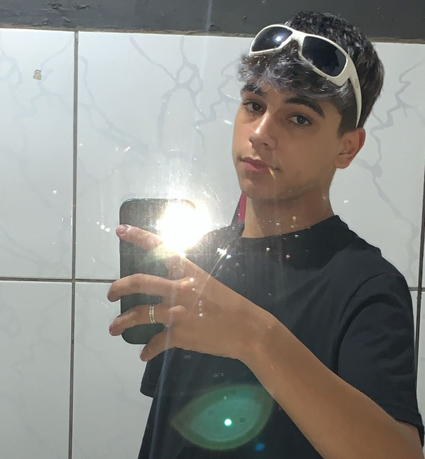

O cancelamento, termo amplamente popularizado nas redes sociais, tornou-se um dos tópicos mais discutidos na sociedade contemporânea. Em um mundo onde as conexões virtuais são mais rápidas do que nunca, a prática de expor, julgar e, muitas vezes, excluir indivíduos por atitudes ou declarações consideradas inadequadas tem levantado questões importantes sobre liberdade de expressão, responsabilidade social e as consequências de nossos atos no ambiente digital. Embora frequentemente motivado por um desejo de responsabilização, o cancelamento tem demonstrado um lado sombrio. Ele muitas vezes ignora nuances e contextos, transformando erros ou opiniões em sentenças definitivas para quem os cometeu. Essa dinâmica não só desumaniza o indivíduo, como também alimenta uma cultura de medo e silenciamento. É justo que exijamos accountability, mas devemos nos questionar: estamos dispostos a oferecer espaço para o crescimento e o aprendizado? Nos últimos anos, casos de cancelamento têm alcançado proporções massivas, afetando não apenas celebridades e figuras públicas, mas também pessoas comuns. As consequências podem ser devastadoras: perda de reputação, empregos, e até mesmo problemas de saúde mental para aqueles que são alvos de ataques massivos. Paralelamente, é preciso refletir sobre o papel das plataformas digitais, que frequentemente amplificam essas situações devido a algoritmos que priorizam conteúdo polêmico e de alta interação.
Por outro lado, é inegável que o cancelamento também trouxe à tona questões importantes. Graças à mobilização online, abusos de poder, discursos discriminatórios e comportamentos antiéticos têm sido mais frequentemente expostos, abrindo espaço para debates necessários. Contudo, o ponto de equilíbrio entre a responsabilização e o linchamento digital segue sendo um desafio coletivo. Enquanto sociedade, precisamos repensar a maneira como lidamos com erros e desacordos, especialmente em espaços digitais. É vital promover o diálogo construtivo e encorajar a educação como alternativa à punição sumária. Da mesma forma, cabe a cada indivíduo refletir sobre o impacto de sua própria participação em campanhas de cancelamento. Nosso papel como veículo de informação é justamente esse: apresentar os fatos de forma imparcial, estimular a reflexão e conscientizar o leitor sobre as implicações dessas práticas. O cancelamento, enquanto fenômeno, é complexo e multifacetado. Ao compreender suas causas e consequências, podemos trabalhar coletivamente para construir uma sociedade mais empática e menos polarizada. É hora de equilibrar justiça com humanidade e aprender a valorizar o poder transformador do arrependimento e da reconciliação. Afinal, somos todos passíveis de erros, mas também somos capazes de evoluir.
Este site foi desenvolvido a partir da disciplina Projeto Integrador III do curso Técnico em Informática para Internet Integrado ao Ensino Médio no Instituto Federal de Educação, Ciência e Tecnologia Catarinense - Campus Concórdia. Nessa disciplina, tivemos como objetivo o desenvolvimento de um site e um artigo cientifico que teve como tema
“A influência da cultura do cancelamento nas relações sociais dos influenciadores digitais". Sendo assim, o desenvolviemnto do projeto contribuiu com o aperfeiçoamento de nossas aptidões e possibilitou também que adquirissemos mais conhecimento acerca da cultura do concelamento como um todo.